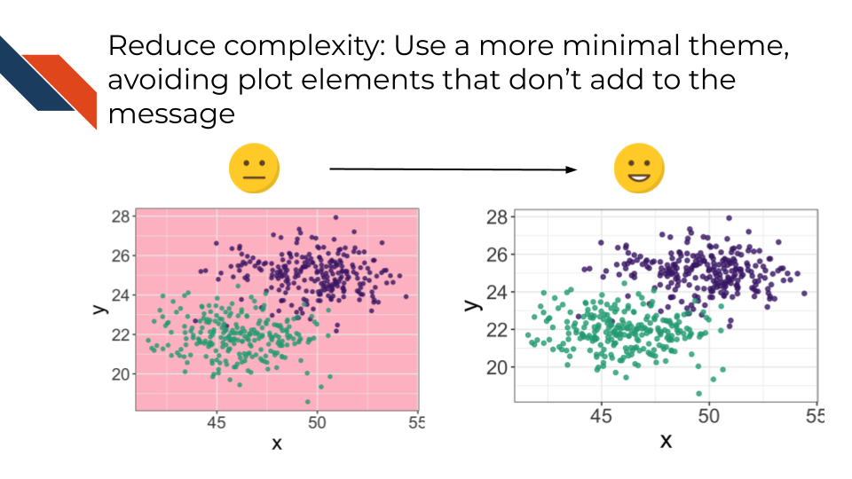
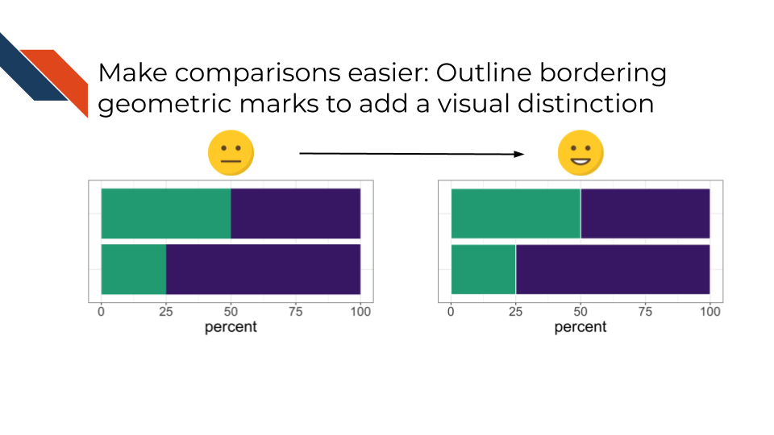
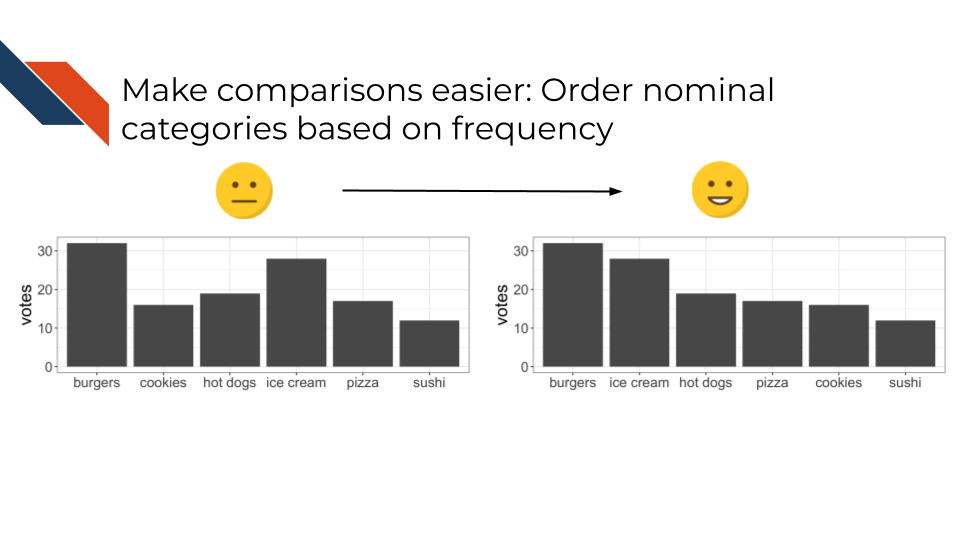
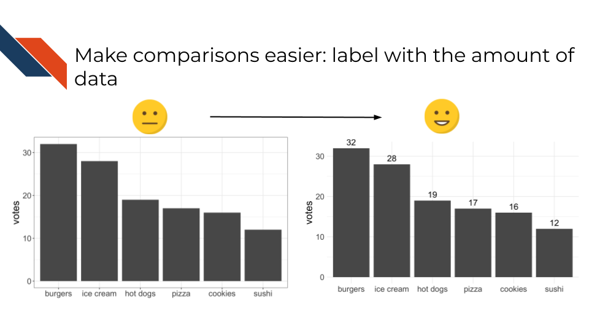
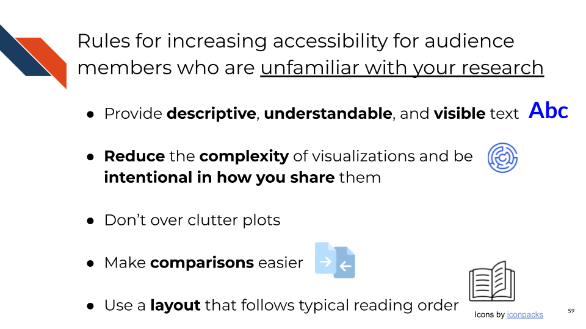
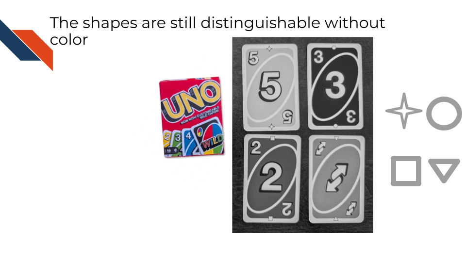
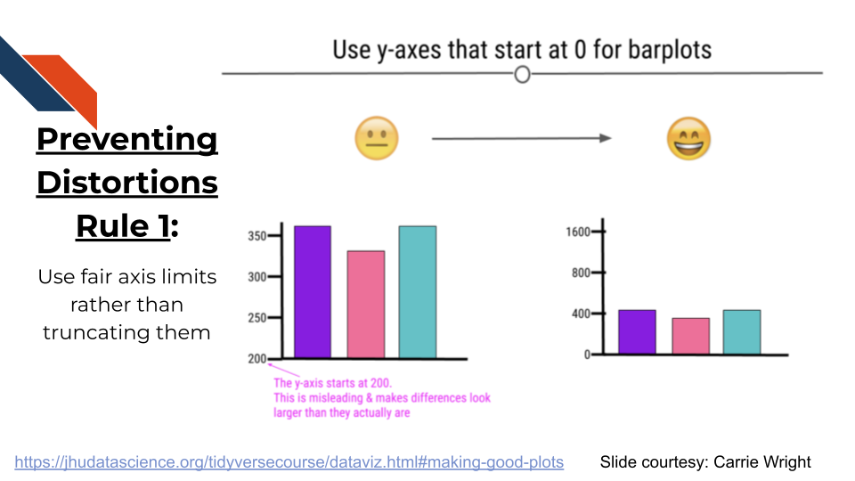

5 Ethical Data Visualization
Creating a high quality data visualization requires more than picking the right plot for your data and your research question. Certainly following visual design principles and utilizing design tools is a part of creating high quality visualization. However, further best practices are needed to ethically present complex data with clarity in a way that is accessible to audiences. This chapter will discuss ways to enhance the clarity and accessibility of data visualizations as well as important ethical considerations.
5.1 Learning Objectives
5.2 Best Practices for Accessibility
5.2.1 What does accessibility have to do with data visualization?
Both accessible and ethical data visualization improve viewers’ understanding rather than confuse or mislead. When sharing a visualization widely, there are several audience types you may encounter:
- Audiences unfamiliar with your research
- Audiences with visual impairments
- Low vision or blindness
- Color vision deficiency
- Audiences with dyslexia or who are prone to distraction
- Audiences with motor impairments
The majority of this resource will focus on making visualizations more accessible for audiences who are unfamiliar with your research or who have visual impairments. Accessibility considerations for audiences with motor impairments mostly impact how to prepare interactive visualizations.
Resources for ensuring interactive visualizations meet accessibility standards include the WCAG Understanding Documents that provide guides for understanding and implementing the World Wide Web Consortium (W3C) Web Accessibility Initiative (WAI) Web Content Accessibility Guidelines (WCAG) (Participants, n.d.b). An example of a relevant guideline is the Keyboard Accessible Guideline (Guidelines 2.1) (Participants, n.d.a).
The University of Washington, as part of their Digital Accessibility Guide, provides a guide related to ensuring keyboard accessibility that references the relevant WCAG Guidelines as well. (Washington 2021)
Harvard University also offers guidance for producing accessible interactive visualizations (Technology, n.d., ).
5.2.2 Audiences unfamiliar with your research
The rules for increasing the accessibility of your visualizations for audiences unfamiliar with your research are united by the principle that you know your research better than your audience will know it. Therefore, you need to guide the audience through the visualization, making sure that the stand alone plot can communicate whatever you would show or tell if you were presenting it to them.
Rule 1: Provide descriptive, understandable, and visible text.
Rule 2: Reduce the complexity of visualizations and be intentional in how you share them.
Rule 3: Don’t over clutter plots.
Rule 4: Make comparisons easier.
Rule 5: Use a layout that follows typical reading order and aligns with expectations.
5.2.2.1 Rule 1: Providing descriptive, understandable, and visible text
- Use a large, visible text size
- Consider bolding specific words for emphasis
- Avoid specialized language such as jargon, acronyms, and abbreviations. If you must use them, define acronyms and abbreviations in your caption.
- Use a declarative and descriptive title that communicates the main takeaway.
- Include a detailed caption that answers the following questions:
- What is the data?
- Where did the data come from?
- What special wrangling, transforming, filtering, etc. was done to the data?
- What’s being shown?
- What do the colors or shapes stand for?
- What is the overall trend or pattern?
- Include axis labels that are accurate but not too detailed.
- Especially avoid jargon and undefined acronyms in axis labels.
Legends can often be simplified to improve clarity, especially if showing binary categorical data. Instead of having a legend title and then labeled groups of True/False or Yes/No, remove the legend title and provide more descriptive group labels (e.g, Filtered / Not Filtered, Significant / Not significant, etc.). Even though these labels are somewhat redundant, they are clearer and require less work from an unfamiliar audience to understand and distinguish the groups.
5.2.2.2 Rule 2: Reduce complexity and clearly/intentionally present complex data
Unnecessary or overly distracting visual design elements are one way in a plot can be complex and perhaps even misleading – by drawing away attention from the main point of the plot to another area. You can reduce complexity of a plot by utilizing a more minimal theme and avoiding plot elements or aesthetics that don’t add to the message of the plot.

An overly complex plot can be misleading for a number of reasons. The main takeaway could be obscured because too much data is present and therefore the main takeaway is non-obvious, hidden, or confused with another pattern that is there. The solution to this issue is to use your visualization to answer only one question at a time.
Accessibility can be increased by decreasing the complexity of a plot, especially decreasing the complexity of the message. If a multi-line title is needed to explain every possible conclusion, there are too many takeaways in the plot.
Sometimes visualizations are showing enough data that multiple conclusions or hypotheses for further explanation can be made. This happens especially when the visualization is showing connections or relationships among multiple aspects of the data. Frequently survey data may be visualized within context, showing how certain populations or demographics answered questions differently. In these cases, several additional conclusions may be possible from close inspection of a visualization. Another example of this is a Circos plot used in cancer research to display genome wide variation (Krzywinski et al. 2009; Chia et al. 2016). Each ring within the circle displays a different piece of information (such as copy number variation or intra- and inter-chromosomal rearrangements/structural variants) for aligned regions of the genome. This is an especially useful plot following catastrophic genomic breaking and error prone reassembly due to chromosome instability in cancer (e.g., Chromothripsis)(Simovic-Lorenz and Ernst 2025).
In these cases where a visualization could suggest multiple conclusions, be intentional in how the complex plot is shared.
- Use the title to focus the takeaway message.
- Use the caption and any accompanying narrative to describe exactly where the audience should be looking.
- Label different aspects such as facet labels, the rings of a Circos plot, axis labels, a few specific data points.
Strongly consider using a less complex plot or a series of less complex plots. Make one or a set of a few and show them to team members and ask which is more accessible while still conveying the point.
If you are sharing a complex visualization in a talk be sure to set aside enough time to walk people through the figure. If there are elements in the visualization that you do not feel need to be mentioned, perhaps they can be removed. Consider having at least one slide beforehand that orients people to what the figure will look like. Using toy data (e.g., simulated, skewed, unrealistic, etc.) explain what different patterns would look like and mean – specifically what conclusions could be made. Once displaying the visualization with your real data, considering using animation to gradually display parts of the visualization. This can be done in a variety of ways such as by utilizing cropping; manually adding shapes that are filled with the background color to cover data and removing them as you proceed through describing the visualization; manually adding helpful annotations on slides; potentially building different aspects of the plot separately and combining them together to form the whole visualization; or building different variations of a visualization depending on what specifically needs focused on or annotated.
If you are sharing a complex visualization in a report or paper be sure to use descriptive titles and captions that describe the main message and what pattern of interest to look for. Consider using multiple panels to showcase more focused aspects individually, supplementing the more complex figure. Reference and describe the plot in the accompanying narrative.
If you are sharing a complex visualization on a poster be sure to make the plot large so that your audience can read it, seeing details and distinguishing key elements. Also be sure to include the narrative or “elevator pitch” you would use to walk people through the visualization visible in case they are viewing the poster without you. In general it’s good practice to streamline the text on a poster, however including descriptions and explanations for complex plots that you can’t simplify is a good idea.
Finally, use visual design elements to reduce complexity. It may seem like adding these elements is adding complexity because it’s adding clutter or ink. However, certain elements are worth the addition because they can increase clarity. Use annotations or labels such as y- or x- intercept lines. Use facets or subplots. Though sometimes splitting a plot into multiple separate plots will be more useful than increasing the number of facets in a single plot. Notice that annotations, labels, and facets may be some of the elements that you gradually reveal or “animate in” during a talk. Finally, ensure clear labeling and names to reduce the complexity of a plot. Make sure the text is readable (large) and understandable.
In the same way that undefined specialized language may not be understandable, it can be misleading. Acronyms and abbreviations can be polysemantic and ambiguous with specific abbreviations having more than one possible meaning (Barnett and Doubleday 2020). Given the context or larger paper, the intended meaning will likely be conveyed, but data visualizations should be able to stand alone. And as such, using undefined specialized language can be misleading to a viewer.
Examples of acronyms with multiple meanings
MS stands for
- Multiple Sclerosis (Neurological Disorders and Stroke, n.d.)
- Mass Spectrometry (Son et al. 2024)
- Morphine Sulfate (Rajan et al. 1998)
- Mitral Stenosis (Napoli et al. 2024)
SD stands for
- Standard deviation (Swords et al. 2023)
- Segregation Distorter (Gingell and McLean 2020)
- Sleep Deprivation (Ford et al. 2024)
RA has at least 8 different clinical meanings (Pakhomov, Pedersen, and Chute 2005).
5.2.2.3 Rule 3: Reducing clutter in plots
To reduce the clutter in plots consider the following things:
- Use facets or subplots
- Increase the transparency for overlapping data
- Make several related plots
While it is necessary to not over clutter plots, it is also necessary to minimize unused space. It’s important to strike a balance between these two considerations. Some iterative polishing and team review may be necessary to find a proper balance. This is a case where data visualization is a bit more of a subjective art form.
5.2.2.4 Rule 4: Making comparisons easier
To make comparisons easier for the audience consider the following steps:
- Reduce unnecessary or unused space. For example, a bar plot with too much space in between the bars makes it more difficult to compare the bars.
- Outline bordering geometric marks to add a visual distinction between pieces.

- Order nominal categories based on frequency. For bar plots especially, or any plot where you want to show a ranking, show the categories ordered according to the ranking or frequency. Ordinal categories should typically be ordered based on their inherent accepted order, although there are cases where we may want to see which category has the highest value for another variable.

- Label geometric marks with the amount of represented data or include an accompanying table with this information.

- Avoid redundancy (exceptions: using alternate means to distinguish groups in addition to color as described in Accessibility Rule 3 below & using simpler, but more redundant legend labels as described in Rule 1 above)
5.2.2.5 Rule 5: Display or arrange data to tell a story
Use a layout that follows typical reading order. Progress through the story of a plot or diagram from left to right and top to bottom. If your visualization is supposed to be showing an increase it should visually look like an increase. If your visualization is supposed to show a decrease, it should look like a decrease. The “highest” point shouldn’t be at the bottom of the plot. If showing a ranking, the highest rank should appear one of the edges with the lowest rank at the other edge.

5.2.3 Rules for increasing accessibility for audience members who have visual impairments
The rules for increasing accessibility for audience members who have visual impairments are all united by the principle that plot elements should be distinguishable.
Rule 1: Use color vision deficiency friendly color palettes.
Rule 2: If using your own color palette, use a package or a simulator to check the accessibility of the color palette.
Rule 3: Don’t use color alone to represent groups.
Rule 4: Use a proper contrast ratio.
Rule 5: Don’t over clutter plots (see Rule 3 for audiences unfamiliar with your research).
Rule 6: Use a sans-serif font.
Rule 7: Provide descriptive alternative text (alt text).
5.2.3.1 Rule 1: Using accessible color palettes
Different people can see the same set of colors differently. Cone cells in retina are photoreceptor cells – those responsible for the detection of light wavelengths and distinguishing of colors (2018). Humans have 3 types of cone cells: red-sensing cones, green-sensing cones, and blue-sensing cones. Each of the various color blindness or color vision deficiencies results from an absence of or change in sensitivity / function of one of the cone types.
The most well known example of a color vision deficiency friendly color palette is viridis. Many modern programming languages and visualization software make using the viridis palette fairly straightforward (in some cases it is the default).
There are other options in addition to viridis such as:
- the sequential palette
PuBuGnfrom ColorBrewer plasmainferno- palettes from the IBM Design Library
- Okabe & Ito
- palettes from Paul Tol
5.2.3.2 Rule 2: Checking accessibility for color palettes
Instead of using an established color vision deficiency friendly color palette, you may want to use one of your own color palettes (perhaps with colors matching an institutional logo).
colorblindr is an R package that simulates color vision deficiency directly on a plot in R, returning what it might look like for different types of color vision deficiency. You can directly examine your visualization to make sure that plot elements and groups are distinguishable and make changes to reassess as needed.
Another option is a color simulator such as “Coloring from Colorblindness” from David Nichols (Nichols, n.d.) that allows for you to enter hex codes or RGB values for a collection of colors and view how those colors compare to one another in various color vision impairment contexts. Very useful when building a color palette or deciding on colors, but doesn’t allow you to simulate how your already made plot would appear in such a scenario. For that, the “Coblis” simulator may be more helpful. Color Oracle is a free color blindness simulator for multiple operating systems and provides a full screen filter (independent of whatever software was used to make the graphic) in order to simulate what color vision deficient individuals would see.
5.2.3.3 Rule 3: Using shape, patterns, or labels in addition to color.
An example of this technique can be found in recent editions of Uno card decks that include geometric shapes on the cards to communicate what group or color that card is.
- Red: Circle
- Green: Triangle
- Blue: Square
- Yellow: Star

By redundantly providing a shape as well as the color, groups can still be distinguished because of the shapes.

5.2.3.4 Rule 4: Checking accessibility for contrast ratios
Appropriate contrast between plot elements is also essential to make your plots accessible. Contrast ratios are computed for two specific color combinations by comparing the foreground color the background color. In many cases the background color is whatever is adjacent to the foreground color. Different ratios are preferred for different graphical elements and the size of text as well as the transparency or graphical element impact the ratio (Elavsky, n.d.).
An acceptable contrast ratio for graphics is at least 3 to 1.
For text, an acceptable contrast ratio is at least 4.5 to 1 but for larger text sizes (18pt or above) a ratio of least 3 to 1 suffices.
See this tutorial about contrast.
While having white text on a black background does meet acceptable contrast ratios, for some viewers the bright text appears to bleed or blur against the dark background (a visual fuzzing effect termed “halation”). This is a common occurrence for those with astigmatism (Base, n.d.).
The coloratio R package and this WebAIM online contrast checker are useful tools to compare the colors in your color palettes for contrast ratios. Unlike color vision deficiency tools, you cannot provide a graph and have it assessed, you instead can only provide different combinations of colors (as well as any associated transparency levels / alpha).
5.2.3.5 Rule 6: Using sans-serif fonts
Common more vision-friendly sans-serif fonts include Verdana, Arial, and Calibri. Serif fonts have ornamental marks or elongations of the letters that can be distracting or difficult to those with vision impairments to read. In general, it’s better to have simpler plots (removing redundant or unnecessary marks). This is especially true for fonts. Use a sans-serif font instead of a serif font.
5.2.3.6 Rule 7: Provide Descriptive Alternative Text (Schwabish, Popkin, and Feng 2022; Services, n.d.)
Providing alternative text describing what your plot shows can make your plots accessible to those with vision impairment.
Alternative text should answer the following questions:
- What kind of graph or chart is being used? Is it a logo, illustration, cartoon, or diagram instead?
- What variable is represented on each axis?
- What are the observed/displayed ranges of the variables?
- Are there any key visual design elements such as regression or dashed annotation lines?
- What does the visual show regarding the relationship between the variables?
- Are any specific data points highlighted?
- What is the main point or takeaway?
Alternative text doesn’t need to be more than a few sentences. It is best used to describe key elements rather than every single detail. Use proper punctuation and capitalization, focusing primarily on including periods (.), commas (,), and dashes (-). Write out phrases (ex: “multiplied by”) instead of using symbols (ex: “X”) in place of the phrases. If including an acronym (that you’ve already defined somewhere), you can use a fully capitalized acronym without spaces in alternative text.
5.3 Best Practices for Ethics
5.3.1 What does ethics have to do with data visualization?
Ethical visualizations improve viewers’ understanding rather than confuse or mislead. Misleading messages are not always intentional on the part of the researcher putting together a data visualization, and mistakes happen (e.g., bugs in software, errors in data entry, etc.). It’s the responsibility of the researcher to carefully evaluate all data visualizations before sharing them to make sure that the visualizations clearly and accurately present the data and communicate the overall goal.
Several of the topics we’ll provide within this section about ethical considerations are related to tips to reduce complexity and enhance accessibility. This is not surprising given that clear communication is a necessity for both ethical and accessible visualizations.
There are 5 main categories for practicing ethical data visualization. Each category has a set of sub-rules or tips.
I. Championing Safety & Transparency
- Don’t include identifiable data.
- Include all relevant data or subgroups.
- Describe removed samples or dropouts.
- Ensuring Accuracy
- Verify that visualization accurately represent the data.
- Use clear and accurate axis labels.
- Preventing Data Distortion
- Use fair axis limits rather than truncating axes.
- Order axes in a logical way that corresponds to the plot’s message.
- Separate overlapping plot elements.
- Use a veridical aspect ratio that doesn’t stretch or shrink data.
- Maintaining Originality
- Don’t take someone’s visualization (with their data) without attribution.
- Use your own data in making a similar visualization, modifying where you can.
- If using a type of plot and are in doubt, attribute.
V. Practicing Empathy
- Visualize each data point.
- Avoid stereotypical colors.
- Use person-first language when appropriate and avoid insensitive language.
- Expand an “Other” category.
5.3.2 Ethical Data Inclusion: Safety & Transparency
The rules within this section are aimed to safeguard patient privacy and provide transparency.
Rule 1: Don’t include identifiable data
Identifiable data includes but are not limited to the following (“The 18 HIPAA Identifiers,” n.d.):
- Names
- Addresses (subdivisions smaller than state such as zip code)
- Dates relating to individuals such as birth dates, admission dates, discharge dates, etc.
- Contact information (e.g., telephone or fax numbers, email addresses)
- Medical record numbers
- Account numbers
Some data in that list may not seem like it is identifiable, but it can be, and therefore caution should be exercised and those variables should not be plotted in way that individual data points could be linked to a person or patient.
Exercise caution in defining or showing patient IDs or geographical locations to be sure that you are not plotting potentially identifiable data.
Rule 2: Include all relevant data or subgroups
Pie charts may incorrectly portray or give the impression that all data or relevant subgroups are included in the visualization when they are not.
Rule 3: Describe removed samples or dropouts
Captions are the primary place for this. Perhaps a title could very explicitly describe which groups are being visualized. The accompanying narrative should also include this information. However, because data visualizations should be able to stand alone, be sure to include this information with the visualization as well.
Some plot types, especially diagrams showing a process may provide a way to show which categories of samples are removed or how many patients dropped out (e.g., Sankey Diagrams).
5.3.3 Ensuring Accuracy
The rules within this section are aimed to encourage careful verification of visualizations.
Rule 1: Verify that visualizations accurately represent the data
To verify that visualizations accurately represent the data, ask the following questions:
- How much data (e.g., how many data points, sum of the bars, number of categories) should be in the visualization and how much is there?
- Do the displayed sizes or areas match my expectations and summary stats of the data?
- Do the displayed sizes or areas match the labels within the plot?
- Do visualizations show a consistent message if comparing multiple related visualizations to each other?
- Does a visualization where the development process has been edited still appear consistent with earlier versions?
As described earlier in this course, always double check your expository visualizations for accuracy before you share them widely.
Rule 2: Use clear and accurate axis labels
Researchers may simplify axis labels to help the audience find a plot more approachable. However, simplifying axis labels may be misleading, especially if the simplified label doesn’t adequately match what is being plotted. In such cases, why not plot the data for a simplified label – does such a plot maintain the pattern or message of interest? It’s best to give an accurate description of what is plotted even if more thorough descriptions may be necessary in captions or accompanying narratives to clearly communicate jargon or concepts.
5.3.4 Preventing Data Distortion
The aims for rules within this section include to avoid misleading messages and to compare groups fairly.
Rule 1: Use fair axis limits rather than truncating axes
Starting y-axes at 0 often provides for a fairer comparison between groups than if y-axes are truncated. In those cases, differences are exaggerated, looking larger than they actually are.

Note however, that the example on the right (above) goes too far in the opposite direction by expanding the y-axis an unreasonable length beyond the data limits. This has the opposite effect of making differences look smaller than they are the groups more similar. If there were a fourth group cropped out of the graph that did reach the 1600 value on the y-axis that y-axis upper limit would be more reasonable. A good rule of thumb is to use axis limits that reflect the range of the data or at least the possible ranges that the data could take on.
If using facets or subplots in your data visualizations, clearly communicate whether the facets share the same axis limits or not. If audience members are comparing the facets to each other, they may expect them to share the same axis limits.
Rule 2: Order axes in a logical way that corresponds to the plot’s message
This is related to accessibility Rule 5 for audiences unfamiliar with your research. If a line is going up over time, but the message is related to decrease, why is the line going up? This can be misleading and the plot should be reworked to have a consistent message. Audience members may only be looking at your plot briefly as they skim through abstracts or attend seminars, therefore, the message should match whatever quick impression the plot provides.
Rule 3: Separate overlapping plot elements
If overlapping plot elements aren’t separated, signal can be obscured or missed.
To separate plot elements consider the following tools or adjustments:
- Adjust the shape, size, or transparency of geometric marks.
- Use a log scale or other transformation to separate dense data.
- Use a zoomed inset to focus on a dense area of data.
- Use facets or subplots to separate different categories of data.
Rule 4: Use a veridical aspect ratio that doesn’t stretch or shrink data
Veridical: Truthful or genuine; showing what is true or real
For charts where both axes have numerical data or certain charts that are using angles to represent data, it is important to make sure that the aspect ratio of plot is fair and truthful: a 1 to 1 data ratio. If both axes have the same limits or the same amount of data (e.g., length), the plot should appear square. This ensures visual fidelity or an authentic and faithful representation of the data and the relationships between variables. Otherwise, there could be stretching or shrinking that distorts the location of data and the displayed trends.
5.3.5 Maintaining Originality
Rule 1: Don’t take someone’s visualization (with their data) without attribution.
Rule 2: Use your own data in making a similar visualization, modifying where you can.
Rule 3: If using a type of plot and are in doubt, attribute.
5.3.6 Practicing Empathy
The following are tips for showing empathy while constructing data visualizations based on suggestions from the Urban Institute (Schwabish and Feng 2021; Schwabish, Popkin, and Feng 2022). These are more tips and not rules because they are more subjective.
Tip 1: Visualize each data point.
In the scientific and biomedical fields, often each data point represents a patient. Showing each data point rather than just a summary or geometric mark that collapses the data points into a single bar / etc, recognizes that the data comes from patients.
In addition, showing each data point can be useful in showing how much data there is and how it is distributed. jitter can be a useful tool in plotting individual data points on top of bar plots, box plots, violin plots, etc. providing a small bit of random separation for data points.
Tip 2: Avoid stereotypical colors
Red and Green are often stereotypical colors for stop and go, exclude and include, etc. However, certain mixtures of colors (such as red and green) are not accessible to all audiences. Therefore, avoid use of stereotypical colors to represent certain groups.
Tip 3: Use person-first language when appropriate and avoid insensitive language
When writing titles, captions, and axis labels, use person-first language (e.g., “Patients with cancer”) (when appropriate) and avoid insensitive language. Many patient groups do not want to be defined by their illness and therefore prefer person-first language. Some populations do not prefer person-first language (for example the Deaf Community). For your research area, review what language is preferred and keep that in mind when developing expository visualizations.
Tip 4: Expand an “Other” category
This tip is related to Safety & Transparency in Data Inclusion Rule 2 (from Category 1 above). It’s best practices to include all relevant data, and if there are many subgroups represented, often groups with less signal or that aren’t the main focus of the takeaway may be combined into an “Other” category. In those cases, consider if you have the space to separate out each of those subgroups or list all of the subgroups that are part of an “Other” category within a caption (and accompanying narrative or supplemental information).
5.4 Summary
In summary, expository visualizations should be double checked to ensure that they were developed ethically and are accessible to broad audiences, especially those who are unfamiliar with your work and those who may have a color vision impairments. If a plot is not made with consideration of audiences different vision conditions, than it may mislead certain audiences or may not be visible to them. Furthermore, plots can be more challenging to be interpreted by broader audiences if they are overly complex or difficult for those with mobility challenges (in cases like interactive plots that require movements of the viewer). Plots can also obscure or distort patterns in data by dropping samples inappropriately or using truncated axes. Keeping plots simple, by focusing on one main message, and providing descriptions explaining what the plots are intended to show can make them much more interpretable and clear to a wider audience. Ethical and accessible data visualizations provide clarity, improving viewers’ understanding rather than confusing or (even unintentionally) misleading the audience. Careful consideration is paramount to ensuring the development of accurate and understandable data visualizations. The time that is required for these considerations is well worth the benefit to the scientific community.
2018. American Academy of Ophthalmology. https://www.aao.org/eye-health/anatomy/cones.
Barnett, Adrian, and Zoe Doubleday. 2020. “The Growth of Acronyms in the Scientific Literature.” Edited by Peter Rodgers. eLife 9: e60080. https://doi.org/10.7554/eLife.60080.
Base, North Dakota State University Information Technology Knowledge. n.d. “Color Contrast.” https://kb.ndsu.edu/it/147732.
Chia, Puey Ling, Craig Gedye, Paul C. Boutros, Paul Wheatley-Price, and Thomas John. 2016. “Current and Evolving Methods to Visualize Biological Data in Cancer Research.” JNCI: Journal of the National Cancer Institute 108 (8): djw031. https://doi.org/10.1093/jnci/djw031.
Elavsky, Frank. n.d. “What Is High Contrast for Data Visualization?” Observable. https://observablehq.com/@frankelavsky/high-contrast-for-data-visualization-with-examples.
Ford, Kaitlyn, Elena Zuin, Dario Righelli, Elizabeth Medina, Hannah Schoch, Kristan Singletary, Christine Muheim, et al. 2024. “A Global Transcriptional Atlas of the Effect of Acute Sleep Deprivation in the Mouse Frontal Cortex.” iScience 27 (9). https://doi.org/10.1016/j.isci.2024.110752.
Gingell, Luke F, and Janna R McLean. 2020. “A Protamine Knockdown Mimics the Function of Sd in Drosophila Melanogaster.” G3 Genes|Genomes|Genetics 10 (6): 21112115. https://doi.org/10.1534/g3.120.401307.
Krzywinski, Martin, Jacqueline Schein, nan Birol, Joseph Connors, Randy Gascoyne, Doug Horsman, Steven J. Jones, and Marco A. Marra. 2009. “Circos: An Information Aesthetic for Comparative Genomics.” Genome Research 19 (9): 16391645. https://doi.org/10.1101/gr.092759.109.
Napoli, Francesca, Ciro Vella, Luca Ferri, Marco B. Ancona, Barbara Bellini, Filippo Russo, Eustachio Agricola, Antonio Esposito, and Matteo Montorfano. 2024. “Rheumatic and Degenerative Mitral Stenosis: From an Iconic Clinical Case to the Literature Review.” Journal of Cardiovascular Development and Disease 11 (5): 153. https://doi.org/10.3390/jcdd11050153.
Neurological Disorders, National Institute of, and Stroke. n.d. “Multiple Sclerosis (MS).” https://www.ninds.nih.gov/health-information/disorders/multiple-sclerosis-ms.
Nichols, David. n.d. “Coloring for Colorblindness.” http://www.davidmathlogic.com/colorblind/.
Pakhomov, Serguei, Ted Pedersen, and Christopher G. Chute. 2005. “Abbreviation and Acronym Disambiguation in Clinical Discourse.” AMIA Annual Symposium Proceedings 2005: 589593. https://pmc.ncbi.nlm.nih.gov/articles/PMC1560669/.
Participants, Accessibility Guidelines Working Group. n.d.a. “Understanding Guideline 2.1 Keyboard Accessible.” https://www.w3.org/WAI/WCAG22/Understanding/keyboard-accessible.html.
———. n.d.b. “WCAG 2.2 Understanding Docs.” https://www.w3.org/WAI/WCAG22/Understanding/.
Rajan, V., K. Beharry, H. D. Modanlou, J. Parker, Y. Akmal, and J. V. Aranda. 1998. “Effect of Morphine Sulfate (MS) on Endothelin Production and Receptor Responses in Newborn Piglet Brain Endothelial Cells 349.” Pediatric Research 43 (4): 6262. https://doi.org/10.1203/00006450-199804001-00370.
Schwabish, Jonathan, and Alice Feng. 2021. Do No Harm Guide: Applying Equity Awareness in Data Visualization. Urban Institute. https://www.urban.org/research/publication/do-no-harm-guide-applying-equity-awareness-data-visualization.
Schwabish, Jonathan, Susan J. Popkin, and Alice Feng. 2022. Do No Harm Guide: Centering Accessibility in Data Visualization. Urban Institute. https://www.urban.org/research/publication/do-no-harm-guide-centering-accessibility-data-visualization.
Services, Harvard University Digital Accessibility. n.d. “Write Helpful Alt Text to Describe Images.” https://accessibility.huit.harvard.edu/describe-content-images.
Simovic-Lorenz, Milena, and Aurlie Ernst. 2025. “Chromothripsis in Cancer.” Nature Reviews Cancer 25 (2): 7992. https://doi.org/10.1038/s41568-024-00769-5.
Son, Ahrum, Woojin Kim, Jongham Park, Yongho Park, Wonseok Lee, Sangwoon Lee, and Hyunsoo Kim. 2024. “Mass Spectrometry Advancements and Applications for Biomarker Discovery, Diagnostic Innovations, and Personalized Medicine.” International Journal of Molecular Sciences 25 (18): 9880. https://doi.org/10.3390/ijms25189880.
Swords, Christina M., Jerlym S. Porter, Amy J. Hawkins, Edwin Li, Melissa Rowland-Goldsmith, Matthew D. Koci, John T. Tansey, and Nicole C. Woitowich. 2023. “Science Communication Training Imparts Confidence and Influences Public Engagement Activity.” Journal of Microbiology & Biology Education 24 (2): e00037–23. https://doi.org/10.1128/jmbe.00037-23.
Technology, Digital Accessibility Services Harvard University Information. n.d. “Data Visualizations, Charts, and Graphs.” https://accessibility.huit.harvard.edu/data-viz-charts-graphs.
“The 18 HIPAA Identifiers.” n.d. Loyola University Chicago - Information Technology Services (ITS). https://www.luc.edu/its/aboutus/itspoliciesguidelines/hipaainformation/the18hipaaidentifiers/.
Washington, University of. 2021. “Keyboard Accessibility.” Accessible Technology. https://www.washington.edu/accesstech/guide/keyboard/.